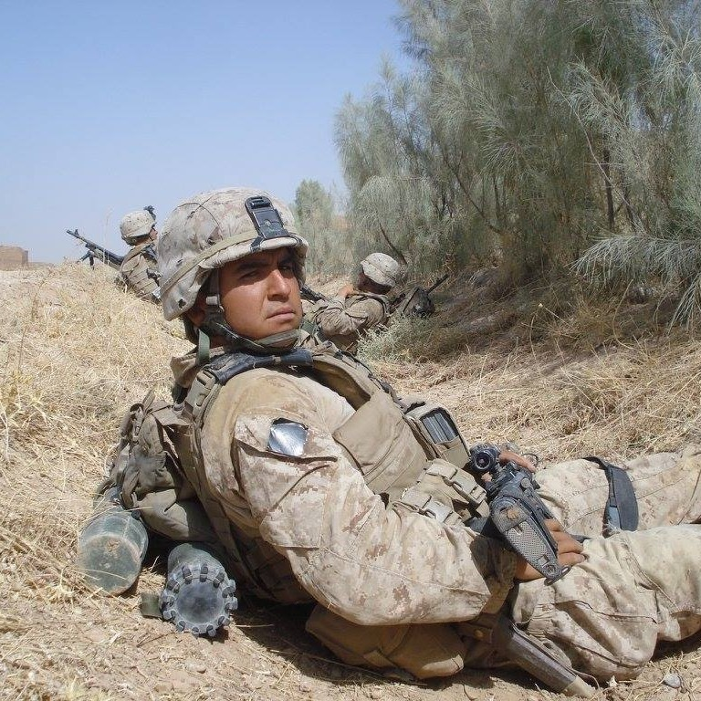
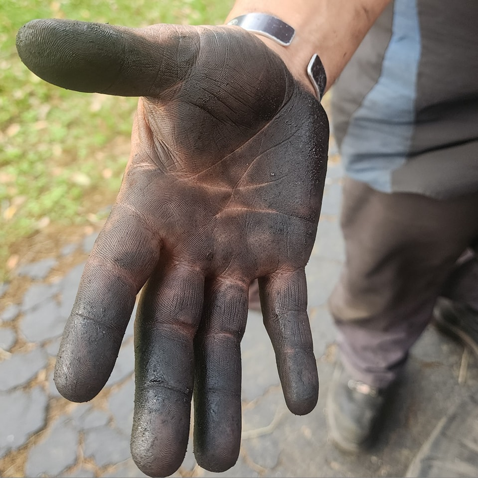

Automotive Repair
Routine maintenance to emergency fixes, diagnosed and repaired at your home or workplace.
Therapy through tech and teaching. Proudly serving the Wharton County area with honest, on-site service from a Cummins Certified technician.

VeteranI'm Vince Morales, owner and master technician. After serving as an Infantry Assaultman in the U.S. Marine Corps from 2006 to 2010, including a deployment to Afghanistan, I carried that same discipline into a career in automotive and diesel repair.
With over a decade of experience, formal training at UTI Houston, a Cummins Certification, and time at Penske, Ford, and Mustang CAT, I opened Mo's Mobile Mechanic in 2024 to bring shop-quality work straight to your driveway.

No call center. No rotating crew. No handing your truck off to whoever is free that day. When you book Mo's, these are the hands doing the work, from the first call to the last bolt.
Grease under the nails, the job done right, and one person standing behind all of it.
From routine maintenance to the codes that just will not go away, you get professional, courteous work wherever your vehicle sits.
Routine maintenance to emergency fixes, diagnosed and repaired at your home or workplace.
Specialized diesel service and troubleshooting from a Cummins Certified technician.
Field service for the machines that keep your job site and your work moving.
Factory-level Cummins knowledge brought right to your driveway or job site.
A clear, no-surprises process from the first message to the final walkthrough.
Send a few details about your vehicle and the issue. I follow up with a call and a diagnostic estimate for your approval before the visit.
A thorough diagnosis using specialized tools, OEM service manuals, and hands-on expertise. The fee is credited back when you approve the repair.
Once you give the green light, repairs are completed on-site to get your vehicle back to its best, with the diagnosis fee coming off the bill.
A clear walkthrough of what was done and why, then we make sure you are fully taken care of before we pack up.
Every diagnostic session is billed at $75 per hour, typically lasting about one hour. If you decide to proceed with repairs, that fee is deducted from your repair invoice. Some issues, like a no-start or complex electrical problems, can require additional diagnostics. I will always send an estimate for your approval before arriving.
All inspections are part of the diagnostic service, which is $75 per hour. That fee is credited toward your repair invoice if you choose to move forward with the work I recommend.
I am based in Wharton, TX and offer free travel within Wharton County. For locations outside the area, there is a modest travel fee of $0.50 per mile, plus travel time billed at half rate, or $37.50 per hour. I am happy to estimate these fees up front so you can make an informed decision.
Yes, you can provide your own parts. I am glad to use them, though please note I cannot offer a warranty on customer-supplied parts.
I do not operate out of a shop. The service is mobile and I come to your location. If you live in a multi-family dwelling like an apartment, I just need to confirm we have permission to perform service on-site.
I am not a performance specialist, so for tuning I will point you to an expert with a shop and specialized equipment. Engine work depends on the scope. I am happy to take a look and will gladly refer you to a dedicated brick-and-mortar shop if it falls outside my mobile setup.
A look at the trucks, diesels, and equipment Mo's has had hands on around Wharton County.
Schedule a diagnosis or call directly. Honest answers, fair pricing, and shop-quality work delivered wherever you are.